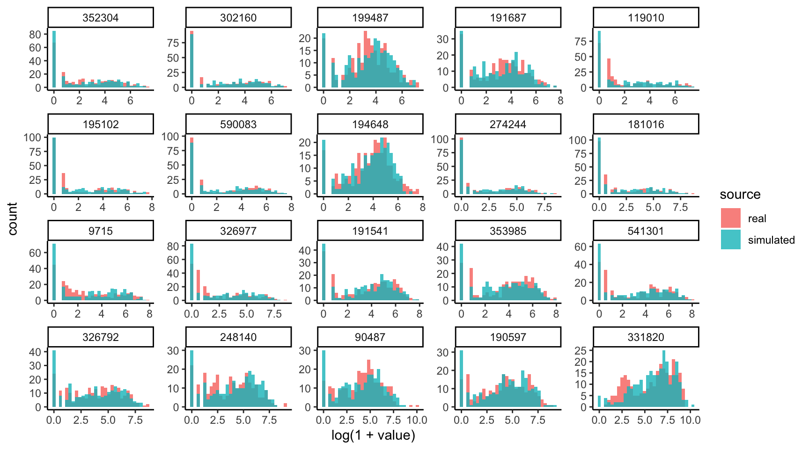

Chapter 4 Microbiome Networks
Unlike human social networks, there is no simple way to observe microbe-microbe interactions – we have to make do with indirect evidence. One approach uses population profiles as a proxy for ecological interaction. Taxa that often co-occur are understood to have cooperative ecological interactions, while those that don’t are thought to compete for the same niche.
Many algorithms have been designed around this intuition, all trying to go beyond simple co-occurrence and instead capture more complex types of dependence. A challenge in practice is that it’s hard to know which method to use when, since the problem is unsupervised. Even when thorough simulation benchmarking studies are available, it’s often not obvious how well those simulation setups match our problems of interest.
4.1 Estimation
Let’s use simulation to benchmark network estimation methods using data from rounds 1 and 2 of the American Gut Project. We will simulate data with known correlation structure and taxa-level marginals estimated from the study data. The block below reads in the data.
## # A SummarizedExperiment-tibble abstraction: 11,745 × 170
## # [90mFeatures=45 | Samples=261 | Assays=counts[0m
## .feature .sample counts X.SampleID BarcodeSequence
## <chr> <chr> <dbl> <dbl> <chr>
## 1 326792 000001879.1076223 0 1879. GAACAAAGAGCG
## 2 181016 000001879.1076223 124 1879. GAACAAAGAGCG
## 3 191687 000001879.1076223 0 1879. GAACAAAGAGCG
## 4 326977 000001879.1076223 0 1879. GAACAAAGAGCG
## 5 194648 000001879.1076223 0 1879. GAACAAAGAGCG
## 6 541301 000001879.1076223 0 1879. GAACAAAGAGCG
## 7 353985 000001879.1076223 79 1879. GAACAAAGAGCG
## 8 90487 000001879.1076223 571 1879. GAACAAAGAGCG
## 9 352304 000001879.1076223 0 1879. GAACAAAGAGCG
## 10 191541 000001879.1076223 1 1879. GAACAAAGAGCG
## # ℹ 35 more rows
## # ℹ 165 more variables: LinkerPrimerSequence <chr>,
## # CARBOHYDRATE_PER <dbl>, LAST_TRAVEL <chr>,
## # NONFOODALLERGIES_BEESTINGS <chr>, ASSIGNED_FROM_GEO <chr>,
## # RUN_DATE <chr>, NONFOODALLERGIES_DRUG <chr>, AGE <dbl>,
## # TOT_MASS <chr>, GENERAL_MEDS <chr>, BODY_SITE <chr>,
## # MIGRAINE_FACTOR_2 <chr>, MIGRAINE_FACTOR_3 <chr>, …We’ve estimated a zero-inflated negative binomial location-shape-scale
(ZINBLSS) models for each taxon, using a gaussian copula to capture
dependence. We have used the regression formula ~log(sequencing_depth) + BMI.
The data structure below captures all the simulator components, and we can swap
pieces in and out to modify the form of the simulator. For example, if we
wanted, we could mutate the family and link function associated with
particular features.
sim <- setup_simulator(
amgut,
~ log(sequencing_depth) + BMI,
~ ZINBLSS()
) |>
estimate(mstop = 100)
sim## [Marginals]
## Plan:
## # A tibble: 6 × 3
## feature family link
## <gene_id> <distn> <link>
## 1 326792 ZINBI [mu,sigma,nu] ~log(sequencing_depth) + BMI
## 2 181016 ZINBI [mu,sigma,nu] ~log(sequencing_depth) + BMI
## 3 191687 ZINBI [mu,sigma,nu] ~log(sequencing_depth) + BMI
## 4 326977 ZINBI [mu,sigma,nu] ~log(sequencing_depth) + BMI
## 5 194648 ZINBI [mu,sigma,nu] ~log(sequencing_depth) + BMI
## 6 541301 ZINBI [mu,sigma,nu] ~log(sequencing_depth) + BMI
##
## Estimates:
## # A tibble: 3 × 2
## feature fit
## <chr> <list>
## 1 326792 <glmbsLSS>
## 2 181016 <glmbsLSS>
## 3 191687 <glmbsLSS>
## ... and 42 additional features.
##
## [Dependence]
## 1 normalCopula with 45 features
##
## [Template Data]
## # A SummarizedExperiment-tibble abstraction: 11,745 × 170
## # [90mFeatures=45 | Samples=261 | Assays=counts[0m
## .feature .sample counts X.SampleID BarcodeSequence
## <chr> <chr> <dbl> <dbl> <chr>
## 1 326792 000001879.1076223 0 1879. GAACAAAGAGCG
## 2 181016 000001879.1076223 124 1879. GAACAAAGAGCG
## 3 191687 000001879.1076223 0 1879. GAACAAAGAGCG
## 4 326977 000001879.1076223 0 1879. GAACAAAGAGCG
## 5 194648 000001879.1076223 0 1879. GAACAAAGAGCG
## 6 541301 000001879.1076223 0 1879. GAACAAAGAGCG
## 7 353985 000001879.1076223 79 1879. GAACAAAGAGCG
## 8 90487 000001879.1076223 571 1879. GAACAAAGAGCG
## 9 352304 000001879.1076223 0 1879. GAACAAAGAGCG
## 10 191541 000001879.1076223 1 1879. GAACAAAGAGCG
## # ℹ 35 more rows
## # ℹ 165 more variables: LinkerPrimerSequence <chr>,
## # CARBOHYDRATE_PER <dbl>, LAST_TRAVEL <chr>,
## # NONFOODALLERGIES_BEESTINGS <chr>, ASSIGNED_FROM_GEO <chr>,
## # RUN_DATE <chr>, NONFOODALLERGIES_DRUG <chr>, AGE <dbl>,
## # TOT_MASS <chr>, GENERAL_MEDS <chr>, BODY_SITE <chr>,
## # MIGRAINE_FACTOR_2 <chr>, MIGRAINE_FACTOR_3 <chr>, …The simulated data is always a SummarizedExperiment. This means that any
workflow that applied to the original data can be applied to the simulated one
without any changes. Notice also that sample defaults to drawing samples from
the same design as the original input experiment (we’ll modify this using the
new_data argument in a minute).
## # A SummarizedExperiment-tibble abstraction: 11,745 × 170
## # [90mFeatures=45 | Samples=261 | Assays=counts_1[0m
## .feature .sample counts_1 X.SampleID BarcodeSequence
## <chr> <chr> <dbl> <dbl> <fct>
## 1 326792 000001879.1076223 257 1879. GAACAAAGAGCG
## 2 181016 000001879.1076223 32 1879. GAACAAAGAGCG
## 3 191687 000001879.1076223 4 1879. GAACAAAGAGCG
## 4 326977 000001879.1076223 0 1879. GAACAAAGAGCG
## 5 194648 000001879.1076223 206 1879. GAACAAAGAGCG
## 6 541301 000001879.1076223 254 1879. GAACAAAGAGCG
## 7 353985 000001879.1076223 0 1879. GAACAAAGAGCG
## 8 90487 000001879.1076223 129 1879. GAACAAAGAGCG
## 9 352304 000001879.1076223 1 1879. GAACAAAGAGCG
## 10 191541 000001879.1076223 17 1879. GAACAAAGAGCG
## # ℹ 35 more rows
## # ℹ 165 more variables: LinkerPrimerSequence <fct>,
## # CARBOHYDRATE_PER <dbl>, LAST_TRAVEL <fct>,
## # NONFOODALLERGIES_BEESTINGS <fct>, ASSIGNED_FROM_GEO <fct>,
## # RUN_DATE <fct>, NONFOODALLERGIES_DRUG <fct>, AGE <dbl>,
## # TOT_MASS <fct>, GENERAL_MEDS <fct>, BODY_SITE <fct>,
## # MIGRAINE_FACTOR_2 <fct>, MIGRAINE_FACTOR_3 <fct>, …4.2 Evaluation
Let’s compare the marginal count distributions for the real and simulated data.
We’ll need the data in “long” format to be able to make the ggplot2 figure. The
pivot_experiment helper can transform the original SummarizedExperiment
objects in this way. Notice that the simulated data tends to overestimate the
number of zeros in the high-abundance taxa. To refine the simulator, we should
probably replace the zero-inflated negative binomial with ordinary negative
binomials for these poorly fitted taxa.
bind_rows(
real = pivot_experiment(amgut),
simulated = pivot_experiment(simulated),
.id = "source"
) |>
filter(feature %in% rownames(simulated)[1:20]) |>
ggplot() +
geom_histogram(
aes(log(1 + value), fill = source),
position = "identity", alpha = 0.8
) +
facet_wrap(~ reorder(feature, value), scales = "free")
Are the learned relationships with BMI plausible? We can compare scatterplots of the real and simulated data against this variable. Note that, by default, the ribbons will be evaluated along all variables, which makes for the jagged ribbons (neighboring values for BMI might have different sequencing depth, potentially leading to quite different predictions). To remove this artifact, we can assume that all samples had exactly the same sequencing depth.
new_data <- colData(amgut) |>
as_tibble() |>
mutate(sequencing_depth = 2e4)
plot(sim, "BMI", sample(sim, new_data = new_data), new_data = new_data)
We next visualize the correlation matrix estimated by the simulator’s copula model. There are a few pairs of taxa that are very highly correlated, and there are also a few taxa that seem to have higher correlation across a large number of taxa (e.g., the taxon in row 34). There is no obvious banding or block structure in this real data, though.

The pair below is one of those with high positive correlation. You can replace the selection with the commented out line to see what one of the anticorrelated pairs of taxa looks like.
# taxa <- rownames(amgut)[c(33, 43)]
taxa <- rownames(amgut)[c(14, 25)]
pivot_experiment(amgut) |>
filter(feature %in% taxa) |>
pivot_wider(names_from = feature) |>
ggplot() +
geom_point(aes(log(1 + .data[[taxa[1]]]), log(1 + .data[[taxa[2]]])))
4.3 Block Covariance
Let’s replace the current copula correlation structure with one from a block
diagonal matrix. In this example, the off-diagonal correlations are 0.6. We can
use mutate_correlation to swap this new correlation matrix into our earlier
simulator.
rho <- c(0.4, .6, 0.8) |>
map(~ matrix(., nrow = 15, ncol = 15)) |>
Matrix::bdiag() |>
as.matrix()
diag(rho) <- 1
simulated <- sim |>
mutate_correlation(rho) |>
sample()
x <- t(assay(simulated))Let’s first look at the SpiecEasi covariance estimate. This is a variant of the
graphical lasso that is designed to be well-adapted to microbiome data. The good
news is that it does warn that the default choices of \(\lambda\) are too large,
which is correct in this case. Unfortunately, it took a while to get this
answer, and we had already been quite generous in allowing it to fit 10 choices
of \(\lambda\).
rho_se <- spiec.easi(x, nlambda = 10, pulsar.params = list(rep.num = 1)) |>
getOptCov() |>
as.matrix() |>
cov2cor()
heatmap(rho_se)
Let’s instead use the Ledoit-Wolf estimator on the log-transformed data. The results make much more sense.

Since color comparisons are difficult to evaluate precisely, we can also make a scatterplot comparing the different covariance estimators.
data.frame(truth = c(rho), se = c(rho_se), lw = c(rho_lw)) |>
pivot_longer(-truth, values_to = "estimate") |>
ggplot() +
geom_jitter(aes(truth, estimate, col = name), alpha = 0.6, size = 0.4) +
geom_abline(slope = 1) +
facet_wrap(~name)
4.4 Generalization
What about other network structures? We can use the same logic to evaluate several network regimes. For example, the block below defines correlation matrices associated with scale-free and banded structures.
data(example_rho)
rho_hat <- list()
for (r in seq_along(example_rho)) {
x <- sim |>
mutate_correlation(example_rho[[r]]) |>
scDesigner::sample() |>
assay()
rho_se <- spiec.easi(t(x), nlambda = 10, pulsar.params = list(rep.num = 1)) |>
getOptCov() |>
as.matrix() |>
cov2cor()
rho_lw <- CovEst.2003LW(log(1 + t(x)))$S |>
cov2cor()
rho_hat[[names(example_rho)[r]]] <- list(se = rho_se, lw = rho_lw)
}
This example shows that, when we start with real template data, it’s not too hard to setup a benchmarking experiment. It’s generally easier to reconfigure the components of an existing simulator than it is to specify all the simulation steps from scratch. There is the secondary bonus that the data tend to look close to real data of interest, at least up to the deliberate transformations needed to establish ground truth.
We could imagine extending this example to include different data properties
(sample sizes, variable block sizes and correlations, more general correlation
structure) and estimation strategies (alternative transformations or
estimators). Design changes could be implemented using expand_colData, changes
in the signal can be specified as above with mutate_correlation, and any
workflow can be used as long as it applies to a SummarizedExperiment object.